3d
This will be the Second blog about 3d plot and I plan to write about more complex models in the future. Stay tuned! But for right now, let’s focus on 3d plt
import matplotlib as mpl
import matplotlib.pyplot as plt
import numpy as np
import pandas as pd
import seaborn as sns
from mpl_toolkits import mplot3d
from mpl_toolkits.mplot3d import Axes3D,axes3d
from mpl_toolkits.mplot3d.axes3d import get_test_data
from matplotlib import cm
from matplotlib import colors as mcolors
from matplotlib.lines import Line2D
from matplotlib.collections import PolyCollection
from matplotlib.ticker import LinearLocator, FormatStrFormatter
fig = plt.figure()
ax = fig.add_subplot(111, projection='3d')
x =[1,2,3,4,5,6,7,8,9,10]
y =[5,6,2,3,13,4,1,2,4,8]
z =[2,3,3,3,5,7,9,11,9,10]
ax.scatter(x, y, z, c='r', marker='o')
ax.set_xlabel('X Label')
ax.set_ylabel('Y Label')
ax.set_zlabel('Z Label')
plt.show()
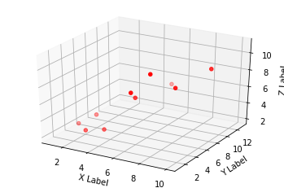
fig = plt.figure()
ax = plt.axes(projection="3d")
z_line = np.linspace(0, 15, 1000)
x_line = np.cos(z_line)
y_line = np.sin(z_line)
ax.plot3D(x_line, y_line, z_line, 'gray')
z_points = 15 * np.random.random(100)
x_points = np.cos(z_points) + 0.1 * np.random.randn(100)
y_points = np.sin(z_points) + 0.1 * np.random.randn(100)
ax.scatter3D(x_points, y_points, z_points, c=z_points, cmap='hsv');
plt.show()
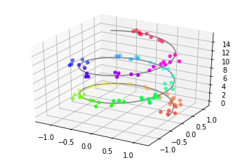
fig = plt.figure()
ax = plt.axes(projection="3d")
ax.plot_wireframe(X, Y, Z, color='green')
ax.set_xlabel('x')
ax.set_ylabel('y')
ax.set_zlabel('z')
plt.show()
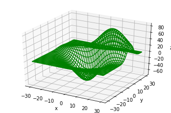
ax = plt.axes(projection='3d')
ax.plot_surface(X, Y, Z, rstride=1, cstride=1,
cmap='winter', edgecolor='none')
ax.set_title('surface');
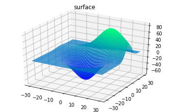
'''
======================
Triangular 3D surfaces
======================
Plot a 3D surface with a triangular mesh.
'''
# Import libraries
# Create figures object
fig = plt.figure()
# Get the current axes, creating one if necessary.
ax = fig.gca(projection='3d')
# Set parameters
n_radii = 8
n_angles = 36
# Make radii and angles spaces (radius r=0 omitted to eliminate duplication).
radii = np.linspace(0.125, 1.0, n_radii)
angles = np.linspace(0, 2*np.pi, n_angles, endpoint=False)[..., np.newaxis]
# Convert polar (radii, angles) coords to cartesian (x, y) coords.
# (0, 0) is manually added at this stage, so there will be no duplicate
# points in the (x, y) plane.
x = np.append(0, (radii*np.cos(angles)).flatten())
y = np.append(0, (radii*np.sin(angles)).flatten())
# Compute z to make the pringle surface.
z = np.sin(-x*y)
# Plot triangular meshed surface plot
ax.plot_trisurf(x, y, z, linewidth=0.2, antialiased=True)
plt.show()
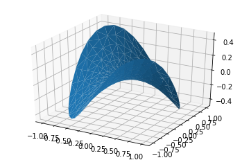
"""
========================
Create 3d surface plots
========================
Plot a contoured surface plot
"""
# Create figures object
fig = plt.figure()
# Get the current axes, creating one if necessary.
ax = fig.gca(projection='3d')
# Make data.
X = np.arange(-5, 5, 0.25)
Y = np.arange(-5, 5, 0.25)
X, Y = np.meshgrid(X, Y)
R = np.sqrt(X**2 + Y**2)
Z = np.sin(R)
# Plot the surface.
surf = ax.plot_surface(X, Y, Z, cmap=cm.coolwarm,
linewidth=0, antialiased=False)
# Customize the z axis.
ax.set_zlim(-1.01, 1.01)
ax.zaxis.set_major_locator(LinearLocator(10))
ax.zaxis.set_major_formatter(FormatStrFormatter('%.02f'))
# Add a color bar which maps values to colors.
fig.colorbar(surf, shrink=0.5, aspect=5)
plt.show()
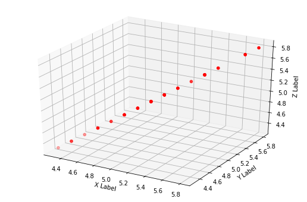
'''
==============
3D lineplot
==============
Demonstration of a basic lineplot in 3D.
'''
# Set the legend font size to 10
mpl.rcParams['legend.fontsize'] = 10
# Create figure object
fig = plt.figure()
# Get the current axes, creating one if necessary.
ax = fig.gca(projection='3d')
# Create data point to plot
theta = np.linspace(-4 * np.pi, 4 * np.pi, 100)
z = np.linspace(-2, 2, 100)
r = z**2 + 1
x = r * np.sin(theta)
y = r * np.cos(theta)
# Plot line graph
ax.plot(x, y, z, label='Parametric curve')
# Set default legend
ax.legend()
plt.show()
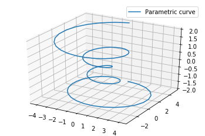
'''
====================
3D plots as subplots
====================
Demonstrate including 3D plots as subplots.
'''
# set up a figure twice as wide as it is tall
fig = plt.figure(figsize=plt.figaspect(0.3))
#===============
# First subplot
#===============
# set up the axes for the first plot
ax = fig.add_subplot(1, 2, 1, projection='3d')
# plot a 3D surface like in the example mplot3d/surface3d_demo
# Get equally spaced numbers with interval of 0.25 from -5 to 5
X = np.arange(-5, 5, 0.25)
Y = np.arange(-5, 5, 0.25)
# Convert it into meshgrid for plotting purpose using x and y
X, Y = np.meshgrid(X, Y)
R = np.sqrt(X**2 + Y**2)
Z = np.sin(R)
surf = ax.plot_surface(X, Y, Z, rstride=1, cstride=1, cmap=cm.coolwarm,
linewidth=0, antialiased=False)
ax.set_zlim(-1.01, 1.01)
fig.colorbar(surf, shrink=0.5, aspect=10)
plt.show()
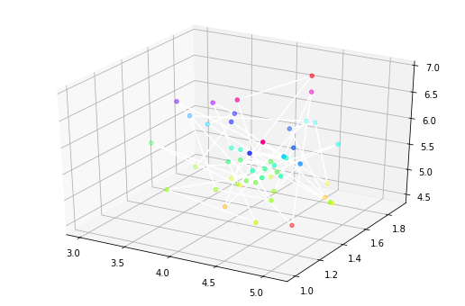
'''
==============
Contour Plots
==============
Plot a contour plot that shows intensity
'''
# Import libraries
# Create figure object
fig = plt.figure()
# Get the current axes, creating one if necessary.
ax = fig.gca(projection='3d')
# Get test data
X, Y, Z = axes3d.get_test_data(0.05)
# Plot contour curves
cset = ax.contour(X, Y, Z, cmap=cm.coolwarm)
# Set labels
ax.clabel(cset, fontsize=9, inline=1)
plt.show()
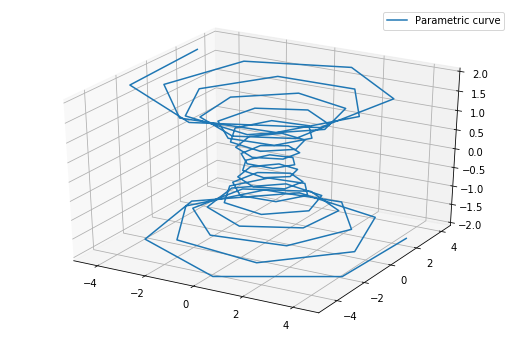
'''
==============
Contour Plots
==============
Plot a contour plot that shows intensity
'''
# Create figure object
fig = plt.figure()
# Get the current axes, creating one if necessary.
ax = fig.gca(projection='3d')
# Get test data
X, Y, Z = axes3d.get_test_data(0.05)
# Plot contour curves
cset = ax.contourf(X, Y, Z, cmap=cm.coolwarm)
# Set labels
ax.clabel(cset, fontsize=9, inline=1)
plt.show()
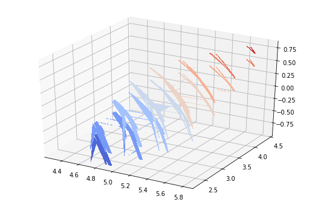
'''
==============
Polygon Plots
==============
Plot a polygon plot
'''
# Import libraries
# Fixing random state for reproducibility
np.random.seed(19680801)
def cc(arg):
'''
Shorthand to convert 'named' colors to rgba format at 60% opacity.
'''
return mcolors.to_rgba(arg, alpha=0.6)
def polygon_under_graph(xlist, ylist):
'''
Construct the vertex list which defines the polygon filling the space under
the (xlist, ylist) line graph. Assumes the xs are in ascending order.
'''
return [(xlist[0], 0.), *zip(xlist, ylist), (xlist[-1], 0.)]
# Create figure object
fig = plt.figure()
# Get the current axes, creating one if necessary.
ax = fig.gca(projection='3d')
# Make verts a list, verts[i] will be a list of (x,y) pairs defining polygon i
verts = []
# Set up the x sequence
xs = np.linspace(0., 10., 26)
# The ith polygon will appear on the plane y = zs[i]
zs = range(4)
for i in zs:
ys = np.random.rand(len(xs))
verts.append(polygon_under_graph(xs, ys))
poly = PolyCollection(verts, facecolors=[cc('r'), cc('g'), cc('b'), cc('y')])
ax.add_collection3d(poly, zs=zs, zdir='y')
# Set labels
ax.set_xlabel('X')
ax.set_ylabel('Y')
ax.set_zlabel('Z')
ax.set_xlim(0, 10)
ax.set_ylim(-1, 4)
ax.set_zlim(0, 1)
plt.show()
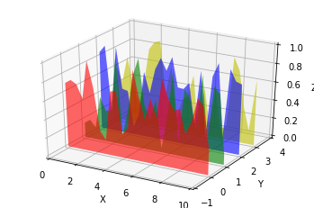
# Get the data (csv file is hosted on the web)
url = 'https://python-graph-gallery.com/wp-content/uploads/volcano.csv'
data = pd.read_csv(url)
# Transform it to a long format
df=data.unstack().reset_index()
df.columns=["X","Y","Z"]
# And transform the old column name in something numeric
df['X']=pd.Categorical(df['X'])
df['X']=df['X'].cat.codes
# We are going to do 20 plots, for 20 different angles
fig = plt.figure()
ax = fig.gca(projection='3d')
ax.plot_trisurf(df['Y'], df['X'], df['Z'], cmap=plt.cm.viridis, linewidth=0.2)
plt.show()
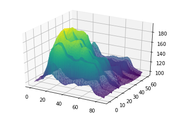
for angle in range(1,20,2):
fig = plt.figure()
filename='pic/'+str(angle)+'.png'
plt.savefig(filename, dpi=96)
<Figure size 432x288 with 0 Axes>